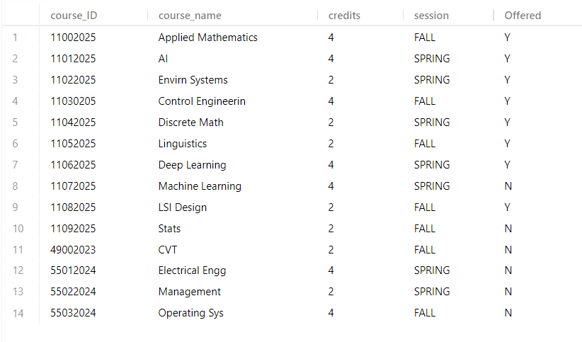
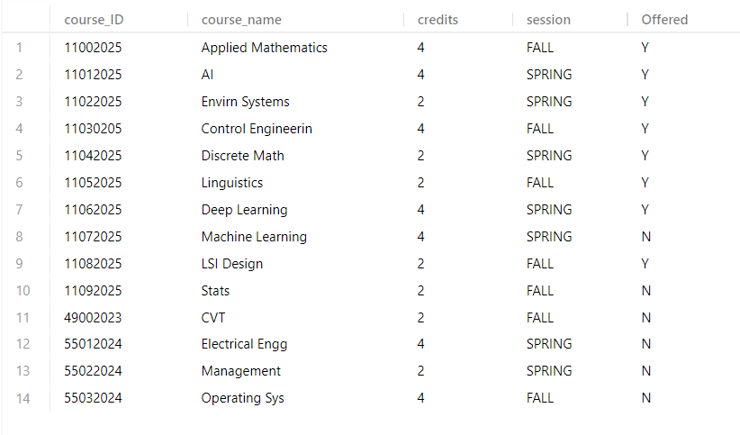

We specialize in designing and managing structured relational databases, with hands-on experience in architecting complex data models aligned with real-world applications. Our team has architected and provisioned normalized relational tables for entities such as Courses, Teachers, Students, and Parents, based on an enhanced Entity-Extended Relationship (EER) diagram. We enforce 1-to-Many (1–N) and Many-to-1 (N–1) relationships using referential integrity constraints and cascading foreign keys. These tables were populated with dimensionally accurate sample data, including 14 course offerings, 6 faculty members, 40 student records, and 15 guardians.

We also engineered an efficient bulk DML (Data Manipulation Language) workflow, utilizing a unified UPDATE ... CASE statement to map and distribute Teacher_ID, Course_ID, and Course_Name across defined student ID ranges. This was followed by an UPDATE ... JOIN operation to propagate normalized credit values from the Course dimension into the appropriate student-course mappings. While procedural WHILE loops were considered for iterative updates, they were ultimately prototyped but not used in PopSQL due to delimiter handling limitations — ensuring a lean and optimized execution strategy.
← Back to Projects